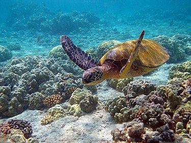
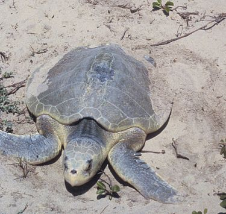
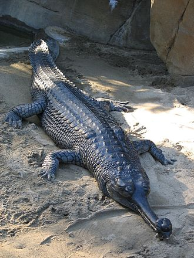
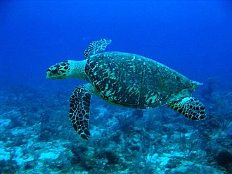
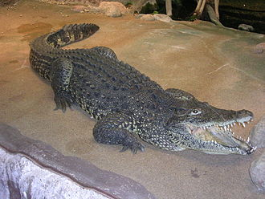

|  |
綠蠵龜 綠蠵龜（學名：Chelonia mydas、英文：green sea turtle），又稱青海龜，是海洋中的爬蟲類動物，是海龜屬下的唯一一種。一生中大多的時間都在海中生活，但演化過程中仍然保留了部分祖先的生活方式，所以必須回到出生地上產卵，繁育後代，形成了一種較獨特的生活習性。由於牠用肺呼吸，於海中的潛水深度極限約一、兩百公尺。綠攜龜的主食為海中的海草與大型海藻，因此體內脂肪累積了許多綠色色素，呈現淡綠色，也因而得名。 |
|  |
肯氏龜 肯氏龜（學名：Lepidochelys kempii，英語：Kemp's ridley sea turtle，或Atlantic ridley sea turtle），又譯肯普氏麗龜，是一種極度瀕危的海龜。牠們是麗龜屬中現在依然存活著的兩種海龜之一，另一種是欖蠵龜。肯氏龜是一種小型海龜，成年體也只有60～90公分（24～35英寸）長，平均重45公斤（99英磅）。其他方面都與典型的海龜相同，例如喙狀嘴、體側的鰭狀肢。肯氏龜的食物包括一些軟體動物、甲殼亞門動物、水母、藻類或者海膽。 |
|  |
恆河鱷 恆河鱷（學名：Gavialis gangeticus），又名食魚鱷、長吻鱷，是長吻鱷科恆河鱷屬中的唯一物種。恆河鱷身體修長，體色為橄欖綠色。在IUCN紅色名錄上被列為極危物種。在所有鱷魚中，恆河鱷能在水中的時間最長，達到1個小時以上，因此爬上陸地後，無法像其他鱷魚般用四肢平穩爬行。恆河鱷因顎部過幼過窄而欠缺獵捕大型獵物的咬合力，因此以魚類為主食。雖然恆河鱷是世界上最長的鱷魚之一，但未有傳出吃人事件。恆河鱷於每年3月至4月生蛋，於河岸沙地挖洞築巢，每次生30至50隻蛋，而所生的蛋亦是所有鱷魚當中最大的。 |
|  |
玳瑁 玳ㄉㄞˋ瑁ㄇㄟˋ（學名：Eretmochelys imbricata）是屬於海龜科的一種海龜，是玳瑁屬下唯一一種，又名瑇瑁、蝳蝐、瑇玳、文甲、鷹嘴海龜、十三鯪龜、十三鱗、十三棱龜、明玳瑁、千年龜，簡稱玳，分為太平洋玳瑁（Eretmochelys imbricata bissa）和大西洋玳瑁（Eretmochelys imbricata imbricata）兩個亞種。 玳瑁如其他海龜一樣，具有典型的海龜特徵，都有扁平的軀體、保護性的背甲、以及適於划水的槳狀鰭足。一般雌性成龜體長為0.6－0.8米，雄性體長相若，體型較大者可達1米，而體型最大者甚至可達1.7米，平均體重一般可達45－80千克。玳瑁最明顯的特點是其上顎鉤曲尖銳如鷹喙般，這也是其俗名之一「鷹嘴海龜」得名的原因。玳瑁的頭較長，前額具2對深紅棕色或黑色鱗甲，鼻孔離嘴較近，吻側內收扁平，前鰭足端各有2爪，後鰭足端各有1爪，前足大，較窄長，後足小，較寬短，游泳時姿態如飛鳥一般。 |
|  |
古巴鱷 古巴鱷（學名：Crocodylus rhombifer）是一種中型鱷魚，身長大約2米至2.5米。古巴的主要特徵是身體黑、黃雙間，以及眼球之上的位置有骨質突起。古巴鱷極為好勇鬥狠，能夠整個身體跳出水面捕食。古巴鱷年幼時主要進食魚類及無脊椎動物為生，成年後則改為進食龜與其他哺乳類動物。牠們的巢是於地上挖掘出來，巢內混有爛泥及植物。繁殖方面，古巴鱷每次生20至50隻蛋。另一方面，牠們與美洲鱷交配。 |